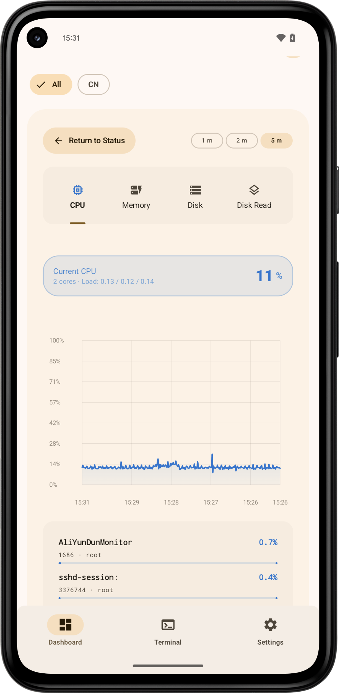

Monitoring
When a curve looks wrong, I want the process or device beside it.
CPU, memory, disk, network, and TCP history are shown with the processes, mounts, or interfaces behind the number. Alerts are set per server; several thresholds crossing at once are merged into one notification.
- Live cards for all of my servers
- Processes, mounts, and interfaces under the history chart
- Disconnect and recovery notices, with per-server thresholds
